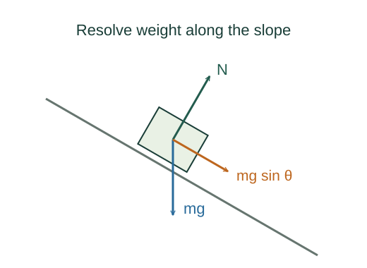

Derive the acceleration down an incline
On an incline, only the component of weight parallel to the surface accelerates the object along it. The perpendicular component is balanced by the surface when the object stays in contact.
What the symbols mean
θ: incline angle above horizontal; m: mass; N: normal-force magnitude; positive direction: down the plane.
When this applies
A fixed, straight, frictionless incline; uniform gravity; no other applied forces; the object remains in contact.
Developing the argument

Rotate the axes
Choose one axis down the plane and another perpendicular outward. Rotating coordinates does not change the force; it makes the constraint easier to express.
Project the weight
The geometry gives a component mg sin θ down the plane and mg cos θ into it. At θ = 0 the down-plane component must vanish, which checks the choice of sine.
A closer lookWhy does an angle produce these components? ↗Use the perpendicular constraint
The object neither leaves nor penetrates the plane, so perpendicular acceleration is zero. Newton’s law fixes the normal force.
Apply Newton along the plane
Divide the parallel equation by mass. The cancellation explains why ideal blocks of different masses share the same acceleration.
A closer lookHow does friction modify this result? ↗A worked example
At θ = 30°, a = g/2 ≈ 4.91 m/s². For a 2 kg object the normal force is about 17.0 N, less than its weight.
Derivation behind this calculation ↗A point to keep straight
N is mg cos θ here, not mg. A normal force is set by the perpendicular equation of motion.
Check the assumptions and derivation ↗